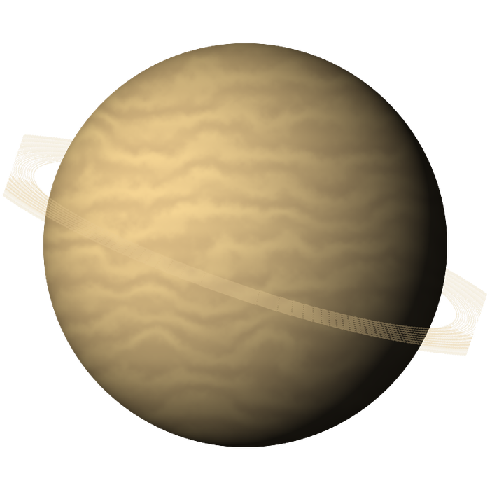

LE SYSTÈME SOLAIRE À PORTÉE DE CLIC
Le cosmos.
Sans limites.
Huit planètes, des missions hors du commun et des découvertes à chaque détour. Prêt pour un voyage au-delà de notre atmosphère ?
NOTRE MAISONPlanète Terre
POSITION3ᵉ planète du Soleil
08Planètes
01Étoile centrale
4,6Milliards d'années environ
∞Raisons d'être curieux
NOS DESTINATIONS
Trois mondes. Trois histoires.
Commence l'exploration avec ces trois planètes aussi différentes que fascinantes.

La planète rouge
Mars
Des paysages de roche rouge et une histoire à décrypter.
Découvrir les planètes →
La géante aux anneaux
Saturne
Un monde spectaculaire entouré de milliers d’anneaux de glace.
Découvrir les planètes →SATURNE / PLANÈTE GÉANTE
UNE AUTRE PERSPECTIVE
Chaque planète a sa propre histoire.
Certaines sont rocheuses, d'autres constituées principalement de gaz ou de glaces. Leurs températures, leurs atmosphères et leurs dimensions nous rappellent la diversité des mondes autour du Soleil.
ASTRA rend ces informations faciles à découvrir : une interface visuelle, un catalogue filtrable et des comparaisons simples.
Comparer les planètes ↗COMMENT EXPLORER ?
Ton voyage en trois étapes.
Choisis une planète
Explore les huit planètes grâce aux filtres et à la recherche.
Remonte le temps
Découvre quatre missions qui ont marqué l'exploration spatiale.
Vérifie tes connaissances
Réponds au quiz interactif et obtiens ton score immédiatement.
DÉPART IMMINENT
Et si le hasard choisissait ta destination ?
Huit planètes sont prêtes à être explorées.